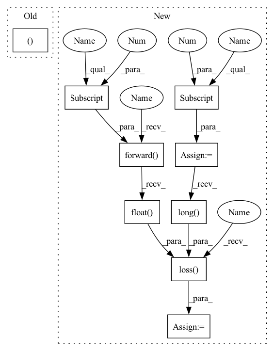

Pattern ID :4424

Before Change
return pred, self.loss(pred.float(), Y.long())
def training_step(self, batch, batch_nb):
pred, loss = self.forward(batch, self.network)
self.train_avg_loss += loss.mean()
self.train_avg_cnt += 1
After Change
return pred
def training_step(self, batch, batch_nb):
pred = self.forward(batch[0]) // == self(batch[0])
Y = batch[1]
loss = self.loss(pred.float(), Y.long())
self.train_avg_loss += loss.mean()
self.train_avg_cnt += 1
if self.get_curidx(batch_nb) % self.train_log_interval == 0:
In pattern: SUPERPATTERN
Frequency: 3
Non-data size: 9
Instances
Fragment ID: 16215701
Project Name: davinnovation/pytorch-boilerplate
Commit Name: f7d820e157d566ac50f3e8341db429891d5e0245
Time: 2020-07-19
Author: davinnovation@gmail.com
File Name: flashlight/runner/pl.py
M Class Name: PL
N Class Name: PL
M Method Name: training_step(3)
N Method Name: training_step(3)
M Parent Class: pl.LightningModule
N Parent Class: pl.LightningModule
M File Name: flashlight/runner/pl.py
N File Name: flashlight/runner/pl.py
M Start Line: 35
M End Line: 35
N Start Line: 32
N End Line: 34
'>
Before Change
torch.cuda.empty_cache()
def validation_step(self, batch, batch_nb): // optional
pred, loss = self.forward(batch, self.network)
return {"val_loss": loss}
After Change
torch.cuda.empty_cache()
def validation_step(self, batch, batch_nb): // optional
pred = self.forward(batch[0])
Y = batch[1]
loss = self.loss(pred.float(), Y.long())
return {"val_loss": loss}
def validation_epoch_end(self, outputs):
'>
Fragment ID: 16215700
Project Name: davinnovation/pytorch-boilerplate
Commit Name: f7d820e157d566ac50f3e8341db429891d5e0245
Time: 2020-07-19
Author: davinnovation@gmail.com
File Name: flashlight/runner/pl.py
M Class Name: PL
N Class Name: PL
M Method Name: validation_step(3)
N Method Name: validation_step(3)
M Parent Class: pl.LightningModule
N Parent Class: pl.LightningModule
M File Name: flashlight/runner/pl.py
N File Name: flashlight/runner/pl.py
M Start Line: 62
M End Line: 62
N Start Line: 61
N End Line: 63
'>
Before Change
return {"val_loss": avg_loss, "log": logs, "progress_bar": logs}
def test_step(self, batch, batch_nb): // optional
pred, loss = self.forward(batch, self.network)
return {"test_loss": loss}
After Change
return {"val_loss": avg_loss, "log": logs, "progress_bar": logs}
def test_step(self, batch, batch_nb): // optional
pred = self.forward(batch[0])
Y = batch[1]
loss = self.loss(pred.float(), Y.long())
return {"test_loss": loss}
def test_epoch_end(self, outputs):
'>
Fragment ID: 16215699
Project Name: davinnovation/pytorch-boilerplate
Commit Name: f7d820e157d566ac50f3e8341db429891d5e0245
Time: 2020-07-19
Author: davinnovation@gmail.com
File Name: flashlight/runner/pl.py
M Class Name: PL
N Class Name: PL
M Method Name: test_step(3)
N Method Name: test_step(3)
M Parent Class: pl.LightningModule
N Parent Class: pl.LightningModule
M File Name: flashlight/runner/pl.py
N File Name: flashlight/runner/pl.py
M Start Line: 73
M End Line: 73
N Start Line: 73
N End Line: 75